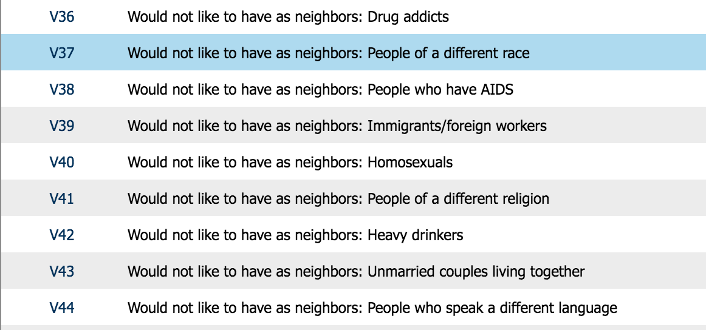
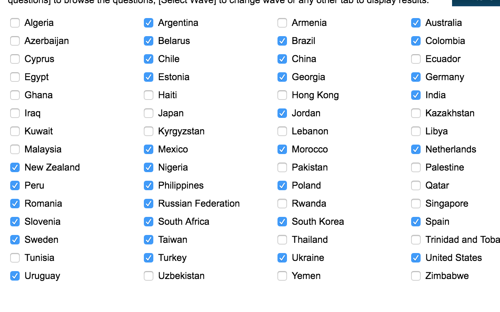
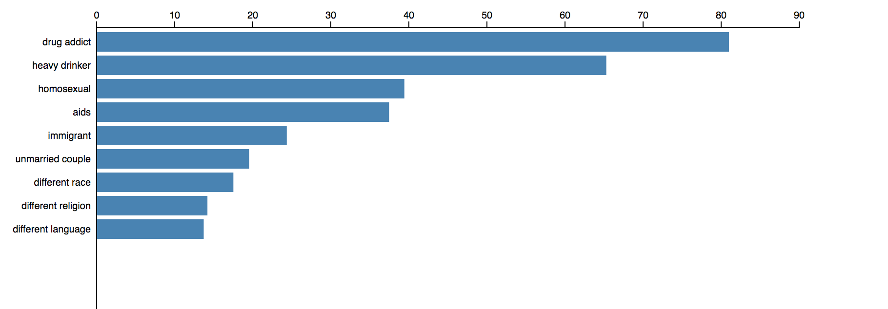
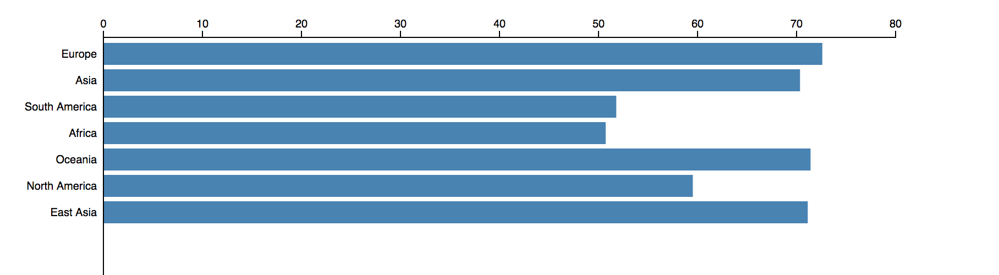
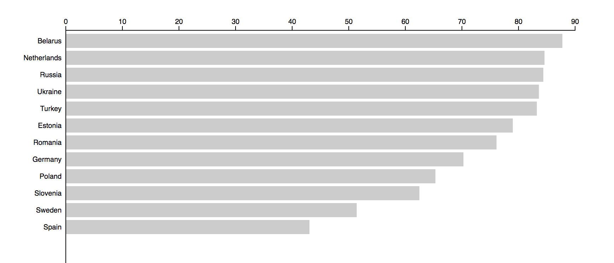
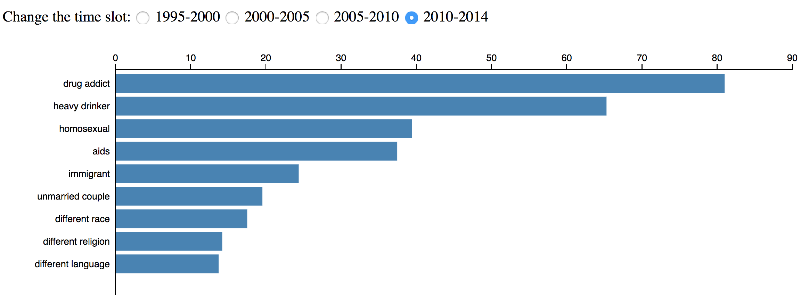

First a basic overview to the project. The subject is making a visualization for World Values Survey. There is a huge databasedatabase and also they have a visualization but the visualization is too slow and too general for any specific usage. The goal of the project is working for a particular data set in this database and my topic is "Would not like to have as neighbors ..." and the full question list is
and my country list is
and my time period is between 1995 and 2015. Unfortunately, there are some gaps in the data, some of the questions are new and some of the countries have no answers for some of the questions, I try to pick as much as appropriate countries for these questions and time periods.
Let's begin our analytic trail. From wikipedia, a neighbourhood(neighbor) (British English), or neighborhood, is a geographically localised community within a larger city, town, suburb or rural area. So, basically the people live around the place where you live. Therefore, the interaction between you and them is inevitable and beacuse of that, lots of people give a priority to the neighbor when deciding where to live. So, let's see which attitude has the most impact for 2010-2015.
In the average, 80 percent of the people do not want a drug addict as a neighbor and almost 15 percent of the people do not want a person who speak a different language as a neighbor. These are the direct outputs from the graphic and now, how can we proceed?
Let's click one of the bars, for instance "Heavy Drinker" and ...
Oww, the results are very close to each other but Europe is a little bit beyond the others. In this screen, we can see the average distribution of the continents for the "Heavy Drinkers" for 2010-2015. Also, you can see the results from target countries when you click the bars of the continent, let's click "Europe".
For each Europe country in the target list is shown in the screen and you can see the average values for each country in Europe.
To go back to the previous screen, you can click the white part of the graphic and you can check the other questions and countries.
Basically, first you select the question, then the continent and finally the country and also, in each step tou can see the results for each part directly so the overview is available at each level.
And about the the slots, it is easy to change the time slots between 1995-2000, 2000-2005, 2005-2010 and 2010-2015(I use these time slots since the data is provided with these slots.).
So, you can select the time slot from the radio buttons and you check for the result for these times.